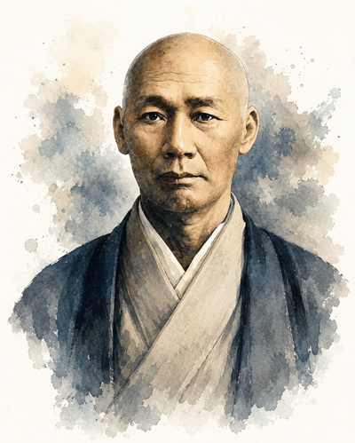

地球: NASA Blue Marble
中浜万次郎
HISTORY OS ・ FOCUS PERSON
World Events
この年の前後の世界
W-LINK
同時代の世界（この年と前後15年）
W-LINK
HISTORY OS / FOCUS PERSON
畳む

中浜万次郎
1827 — 1898
今の場所
—
LIFE
人物年譜（押すとその年月へ）
P-LINK ＋（人物関係）
選ぶとタイムラインに生涯バーを重ねます（年月とカメラは変えません）。もう一度押すか ✕ で解除。
CHAPTER : 全体 ▾
航路について
追跡
ガイド
✕
航路について
1841年1月
‹
▶
›
自動鑑賞 ▶
❚❚
一時停止
››
次の章
◎
章に合わせる
✕
終了
＋
－
カーソル付近をドラッグ＝年月を動かす ／ 背景をドラッグ＝年代を動かす ／ 背景を押す＝その年月へ ／ ＋−＝拡大・縮小
実線＝通ったことが記録にある航路
破線＝推定・確かさ未指定の航路
その月の位置が記録にある
その月の位置は推測
二次資料
記録が二次資料だけ
W-LINK（同時代の世界）
航路から外れた記録の位置
黄＝陸路（鉄道・馬車・徒歩）
もう一度はじめから
終了（通常の表示へ）
⏸ 一時停止中 — ▶ 再開
⏸ 一時停止中 — ▶ 再開
✕
⏸ 一時停止中 — ▶ 再開
✕